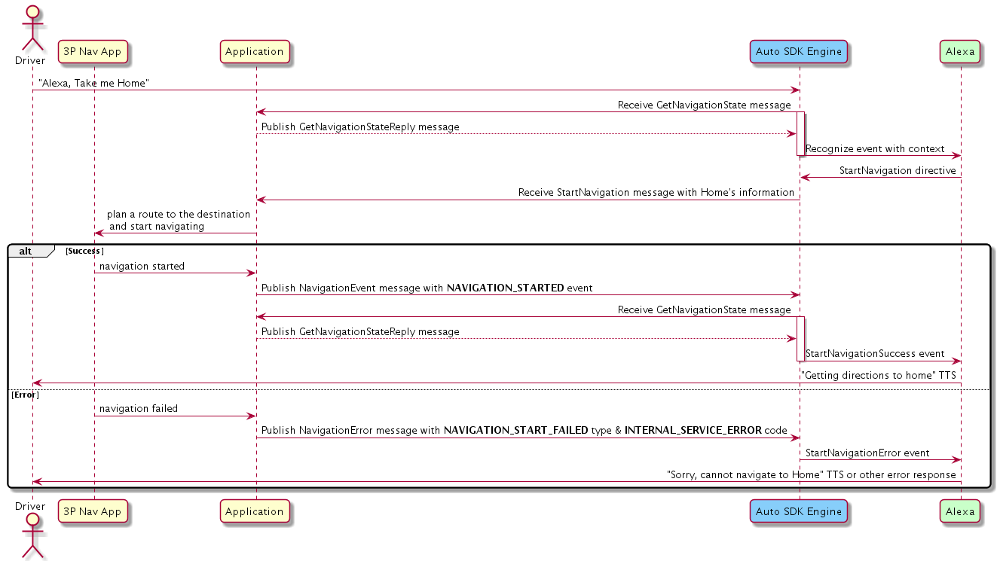
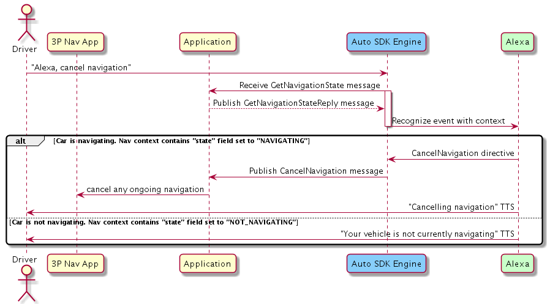
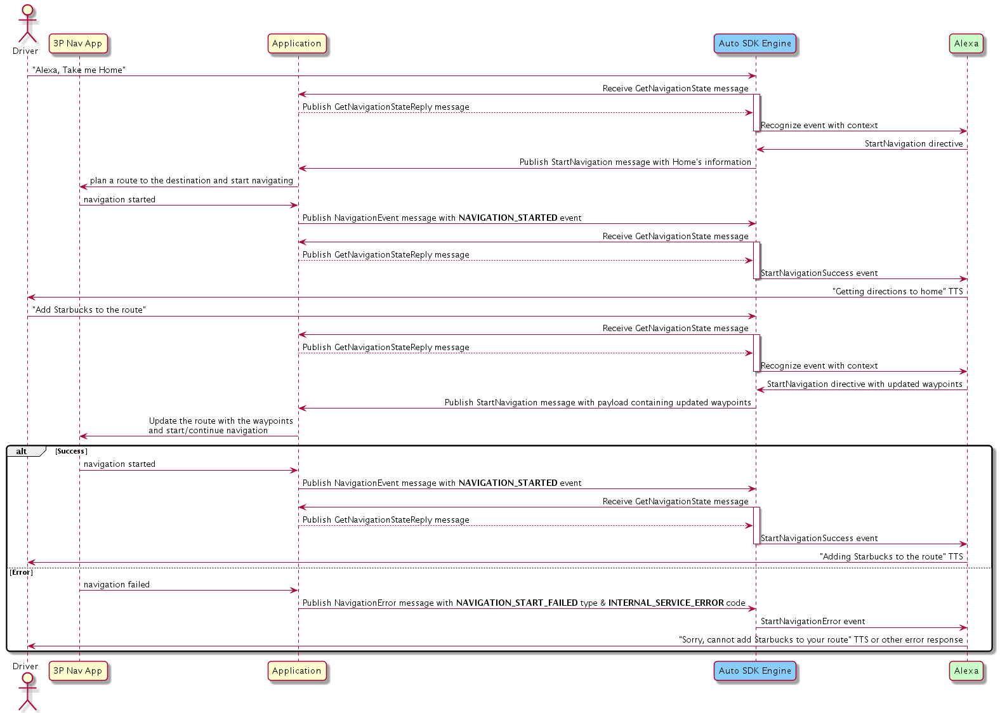
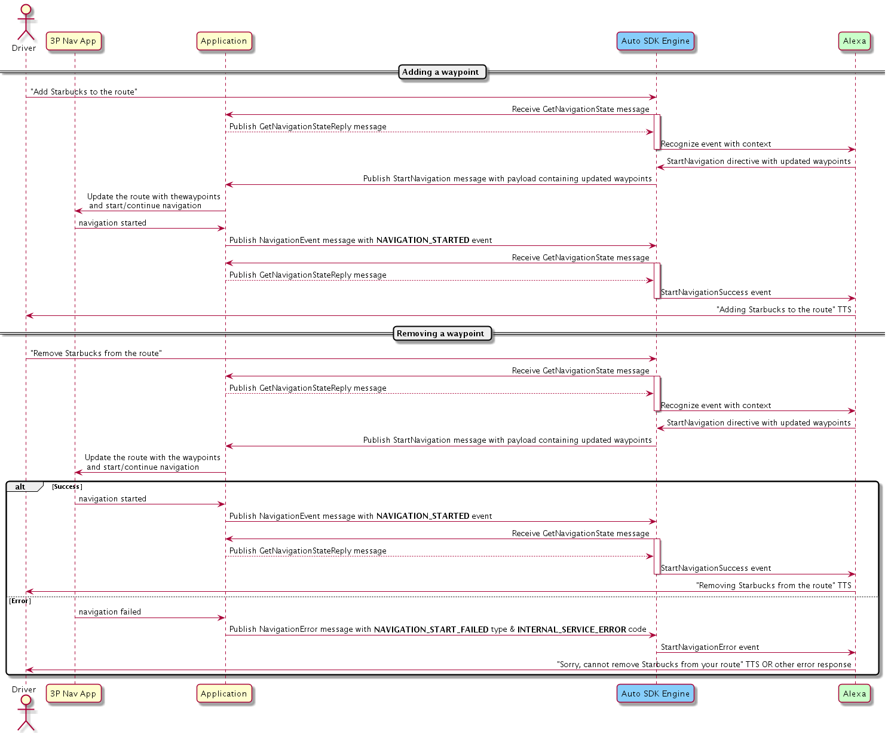

Navigation Module
Table of Contents
- Overview
- Configuring the Navigation Module
- Using the Navigation AASB Messages
- Providing the Current Navigation State
- Starting Navigation
- Stopping Navigation
- Adding a Waypoint
- Canceling a Waypoint
- Showing Previous Waypoints
- Navigating to a Previous Waypoint
- Getting Turn and Lane Guidance Information
- Getting Road Regulation Information
- Controlling the Display
- Showing Alternative Routes
- Integrating the Navigation Module Into Your Application
Overview
The Navigation module enables your Alexa Auto SDK client application to use the navigation capabilities of Alexa and provides support for Alexa to interface with the onboard navigation system.
Your integration is responsible for handling navigation actions when notified to do so by the Engine. How these requests are handled is based on your navigation provider.
Configuring the Navigation Module
To inform Alexa which navigation provider is used on the head unit, configure the Navigation module. Sometimes Alexa needs to query a cloud navigation provider API to fulfill a user request. Knowing which provider is used on the device allows for better customer experience because Alexa's results can more closely match what the user sees on the screen in the navigation app.
To configure the Navigation module, use the "aace.navigation" JSON object specified below in your Engine configuration:
{
"aace.navigation": {
"providerName": "{{STRING}}"
}
}
| Property | Type | Required | Description | Example |
|---|---|---|---|---|
| aace.navigation.providerName | string | No | The navigation service provider name. Accepted values:
|
"HERE" |
Like all Auto SDK Engine configurations, you can either define this JSON in a file and construct an EngineConfiguration from that file, or you can use the provided configuration factory function aace::navigation::config::NavigationConfiguration::createNavigationConfig to programmatically construct the EngineConfiguration in the proper format.
Click to expand or collapse NavigationConfiguration C++ sample code
#include <AACE/Navigation/NavigationConfiguration.h>
std::vector<std::shared_ptr<aace::core::config::EngineConfiguration>> configurations;
auto navigationConfig = aace::navigation::config::NavigationConfiguration::createNavigationConfig("HERE");
configurations.push_back(navigationConfig);
// ... create other EngineConfiguration objects and add them to configurations...
m_engine->configure(configurations);
Android Integration
To use the Navigation module Engine configuration with AACS, use "aacs.navigation" instead of "aace.navigation" in your AACS configuration file:
{
"aacs.navigation": {
"providerName": "{{STRING}}"
}
}
Click to expand or collapse details for Android integration without AACS
AACS is the recommended way to integrate Auto SDK for Android. However, if your integration does not use AACS, you can use the Java factory method com.amazon.aace.navigation.config.NavigationConfiguration.createNavigationConfig to programmatically construct the EngineConfiguration in the proper format.
import com.amazon.aace.navigation.config.NavigationConfiguration;
// Configure the Engine
EngineConfiguration navigationConfiguration = NavigationConfiguration.createNavigationConfig("HERE");
mEngine.configure(new EngineConfiguration[]{
// other config objects,
navigationConfiguration,
// ...
});
Using the Navigation AASB Messages
Providing the Current Navigation State
The navigation state context informs Alexa whether the device is navigating and provides Alexa with the user's routing information or the destination set by the user. Such information is necessary for Alexa to respond to route-based utterances, allowing the user to use the following features:
- Adding or removing waypoints
- Obtaining Estimated Time of Arrival (ETA)
- Obtaining Distance To Arrival (DTA)
When the user requests navigation information based on the current route, the Engine publishes the GetNavigationState message. The implementation should respond with the GetNavigationStateReply message containing the navigation state passed as a JSON string payload.
Note: Returning the navigation state must be quick. If querying the navigation provider for state information takes significant time, Amazon recommends that the application periodically query the provider to update the state in a cache. Then the application can obtain the information each time the Engine requests the navigation state.
The following table explains the properties in the JSON.
| Property | Type | Required | Description |
|---|---|---|---|
| state | String | Yes | The navigation device state. Accepted values:
|
| shapes | Array of arrays | Yes (if state is "NAVIGATING") |
The array contains an ordered list of coordinates depicting the route from the source to destination. Each coordinate is a latitude-longitude pair, specified as an array of doubles (in that order). The array can be empty. The maximum number of coordinates is 100. Special considerations:
|
| waypoints | Array | Yes | List of objects, each representing a waypoint that is a stop on the route. Expand the section below for more information. Note: Can be empty except when state is "NAVIGATING". |
Click to expand or collapse the properties of
waypoints object
| Property | Type | Required | Description |
|---|---|---|---|
| type | String | Yes | Type of the location on the route. Accepted values:
|
| estimatedTimeOfArrival | Object | No (Applicable only if type is "DESTINATION" or "INTERIM".) |
Time of arrival at the waypoint, specified in the ISO-8601 time format. |
| estimatedTimeOfArrival.ideal | String | No | Expected arrival time without considering traffic, diversions, etc. |
| estimatedTimeOfArrival.predicted | String | Yes | Expected arrival time, after considering traffic conditions. If the ideal ETA and predicted ETA match, only the predicted ETA will be populated. |
| address | Object | No | Address of the waypoint specified in multiple string fields, such as addressLine1, city, etc. Note: countryCode is a 3-letter country code in ISO 3166-1 alpha-3 format. |
| name | String | No | Name of the waypoint (e.g., "work" or "Starbucks"). |
| coordinate | Array | Yes | An array consisting of the waypoint's latitude and longitude (in that order). The data type of latitude and longitude is double. |
| pointOfInterest | Object | No | Information about the waypoint if the waypoint is also a point of interest (POI). Expand the section below for more information. |
Click to expand or collapse the properties of
pointOfInterest object
| Property | Type | Required | Description |
|---|---|---|---|
| id | String | No (recommended if available) | ID for the POI known to Alexa. If id is provided, you can omit other properties of pointOfInterest. If the waypoint is added by the user via the navigation app, omit id because Alexa cannot recognize any ID assigned by the app. You can specify the ID if the waypoint is added by Alexa (e.g., by the utterance "Alexa, navigate to Whole Foods along the way"). It is specified in the StartNavigation message payload received from Alexa. |
| hoursOfOperation | Array | No | Hours of operation for the POI. |
| hoursOfOperation.dayOfWeek | String | Y | Day of week for this day. Accepted values: "MONDAY", "TUESDAY", "WEDNESDAY", "THURSDAY", "FRIDAY", "SATURDAY", "SUNDAY". |
| hoursOfOperation.hours | Array | Yes | List of times when the POI is open or closed for the day, specified in ISO 8601 format with the timezone offset (time difference from UTC). Properties in the array are:
|
| hoursOfOperation.type | String | Yes | Status of the current operation. Accepted values: "OPEN_DURING_HOURS", "OPEN_24_HOURS", "CLOSED", "UNKNOWN", "HOLIDAY". |
| phoneNumber | String | No | Phone number of the POI in E.164 format. |
Examples of Navigation State Payload
Click to expand or collapse example Navigation State payload when navigation is in progress
{
"state": "NAVIGATING",
"waypoints": [
{
"type": "SOURCE",
"address": {
"addressLine1": "2795 Augustine Drive",
"addressLine2": "",
"addressLine3": "",
"city": "Santa Clara",
"districtOrCounty": "",
"stateOrRegion": "CA",
"countryCode": "USA",
"postalCode": "95054"
},
"name": "work",
"coordinate": [
37.3809462,
-121.9794846
]
},
{
"type": "INTERIM",
"estimatedTimeOfArrival": {
"ideal": "2019-12-09T17:00:00-08:00",
"predicted": "2019-12-09T17:10:00-08:00"
},
"address": {
"addressLine1": "750 Castro Street",
"addressLine2": "",
"addressLine3": "",
"city": "Mountain View",
"districtOrCounty": "",
"stateOrRegion": "CA",
"countryCode": "USA",
"postalCode": "94041"
},
"name": "Starbucks",
"coordinate": [
37.3809461,
-122.0830221
],
"pointOfInterest": {
"id": "AlexaLocalSearch:eyJpZCI6InllbHA6OnRGV01ySS1VWERGa09FcnZ6eXJ0clEiLCJjb3ZlcnMiOnsiUExBQ0VTX1JFUE8iOiJ5ZWxwOjp0RldNckktVVhERmtPRXJ2enlydHJRIn0sInF1ZXJ5SWQiOiItNjYxMzI1NTYxIiwiZGRiVGFibGVOYW1lIjoiZXMtbHNzLTIwMjEwNjE2Iiwid2VibGFiQWxsb2NhdGlvbnMiOnsiQUxTU19XRUJMQUJfT05CT0FSRF9URVNUSU5HXzI4MDI4NiI6IlQxIiwiQUxFWEFfTE9DQUxTRUFSQ0hfUExBQ0VUWVBFX0NMQVNTSUZJRVJfMzA4MTY5IjoiQyIsIkFMRVhBX0xPQ0FMX1NFQVJDSF9MMlJfRU5USVRZX1NIQURPV18yOTA5MDUiOiJDIiwiQUxFWEFfTE9DQUxfU0VBUkNIX1RSSUdHRVJfQU1CSUdVT1VTX1FVRVJZX0lERU5USUZJQ0FUSU9OXzMyNjMxNSI6IlQxIn19",
"phoneNumber": "+14084968523"
}
},
{
"type": "DESTINATION",
"estimatedTimeOfArrival": {
"ideal": "2019-12-09T17:30:00-08:00",
"predicted": "2019-12-09T17:40:00-08:00"
},
"address": {
"addressLine1": "4800 El Camino Real",
"addressLine2": "",
"addressLine3": "",
"city": "Los Altos",
"districtOrCounty": "",
"stateOrRegion": "CA",
"countryCode": "",
"postalCode": "94022"
},
"name": "Whole Foods Market",
"coordinate": [
37.3991897,
-122.1106268
],
"pointOfInterest": {
"hoursOfOperation": [
{
"dayOfWeek": "MONDAY",
"hours": [
{
"open": "08:00:00-08:00",
"close": "22:00:00-08:00"
}
],
"type": "OPEN_DURING_HOURS"
}
]
}
}
],
"shapes": [
[
"37.380946",
"-121.9794846"
],
[
"37.380545",
"-122.073252"
],
...
]
}
Click to expand or collapse example Navigation State payload when navigation no navigation is in progress
{
"state": "NOT_NAVIGATING",
"waypoints":[],
"shapes":[]
}
Starting Navigation
To start navigation, the Engine publishes the StartNavigation message passing a JSON string payload containing the destination information.
The following table explains the properties in the JSON.
| Property | Type | Required | Description |
|---|---|---|---|
| transportationMode | String | No | The mode of transportation. Accepted Values:
|
| waypoints | Array | Yes | List of objects, each representing a waypoint that is a stop on the route. The properties use the same schema used for state reporting. See the Providing the Current Navigation State section. |
Click to expand or collapse the
StartNavigation message payload schema
{
"transportationMode": "DRIVING",
"waypoints":[
{
"type":"{{STRING}}",
"estimatedTimeOfArrival":{
"ideal":"{{STRING}}",
"predicted":"{{STRING}}"
},
"address": {
"addressLine1": "{{STRING}}",
"addressLine2": "{{STRING}}",
"addressLine3": "{{STRING}}",
"city": "{{STRING}}",
"districtOrCounty": "{{STRING}}",
"stateOrRegion": "{{STRING}}",
"countryCode": "{{STRING}}",
"postalCode": "{{STRING}}"
},
"coordinate":[
{{LATITUDE_DOUBLE}},
{{LONGITUDE_DOUBLE}}
],
"name":"{{STRING}}"
},
{
"type":"{{STRING}}",
"estimatedTimeOfArrival":{
"ideal":"{{STRING}}",
"predicted":"{{STRING}}"
},
"address":"{{STRING}}",
"coordinate":[
{{LATITUDE_DOUBLE}},
{{LONGITUDE_DOUBLE}}
],
"name":"{{STRING}}",
"pointOfInterest":{
"id":"{{STRING}}",
"hoursOfOperation":[
{
"dayOfWeek":"{{STRING}}",
"hours":[
{
"open":"{{STRING}}",
"close":"{{STRING}}"
}
],
"type":"{{STRING}}"
}
],
"phoneNumber":"{{STRING}}"
}
}
]
}
}
Note: The waypoints in the route are determined by Alexa either through a proximity search or by resolving the user's uploaded navigation favorite name to its location. Your implementation should calculate the route from the
SOURCEwaypoint to theDESTINATIONwaypoint, with stops along the way atINTERIMwaypoints in the order in which they appear in the payload. If there are multiple routes, your implementation should either pick the fastest route if no user interaction is possible, or let the user choose the route. After the route is chosen, your implementation should start navigation.
If navigation starts successfully, your implementation should publish the NavigationEvent message with a NAVIGATION_STARTED event. Otherwise, it should publish the NavigationError message with the NAVIGATION_START_FAILED type, and INTERNAL_SERVICE_ERROR or ROUTE_NOT_FOUND code.
Click to expand or collapse sequence diagram: Starting Navigation

Stopping Navigation
To stop navigation, the Engine publishes the CancelNavigation message. Consequently, when the Engine publishes the next GetNavigationState message the state should be NOT_NAVIGATING.
Click to expand or collapse sequence diagram: Stopping Navigation

Adding a Waypoint
If the user wants to add a waypoint, the Engine publishes the StartNavigation message.
If navigation is in progress or route is present, the route to the final destination is changed by including the additional waypoint. Your implementation should calculate or re-calculate the route with the information of the waypoint.
If the waypoint is added successfully, your implementation should publish the NavigationEvent message with a NAVIGATION_STARTED event. Otherwise, it should publish the NavigationError message with the NAVIGATION_START_FAILED type, and INTERNAL_SERVICE_ERROR or ROUTE_NOT_FOUND code.
Click to expand or collapse sequence diagram: Adding a Waypoint

Canceling a Waypoint
If the user wants to cancel a waypoint, the Engine publishes the StartNavigation message after receiving the directive from Alexa with the updated waypoints. Your implementation should start navigation using the updated waypoints.
If navigation is started successfully, your implementation should publish the NavigationEvent message with a NAVIGATION_STARTED event. Otherwise, it should publish the NavigationError message with the NAVIGATION_START_FAILED type, and INTERNAL_SERVICE_ERROR or ROUTE_NOT_FOUND code.
Click to expand or collapse sequence diagram: Canceling a Waypoint

Showing Previous Waypoints
If the user wants to display previous waypoints, the Engine publishes the ShowPreviousWaypoints message. Each waypoint displayed includes at least the address.
If the device can successfully display the previous waypoints, your implementation should publish the NavigationEvent message with a PREVIOUS_WAYPOINTS_SHOWN event. Otherwise, it should publish the NavigationError message with the SHOW_PREVIOUS_WAYPOINTS_FAILED type, and INTERNAL_SERVICE_ERROR or NO_PREVIOUS_WAYPOINTS code.
Note: It is the responsibility of the navigation provider to store and provide the previous destination list to the user.
Click to expand or collapse sequence diagram: Showing Previous Waypoints

Navigating to a Previous Waypoint
If the user wants to navigate to a previous waypoint, the Engine publishes the NavigateToPreviousWaypoint message.
The navigation app retrieves the most recently used destination, calculates a route from the current location, selects the fastest route or a route preferred by the user, and starts navigation.
If the device can successfully display the previous waypoints, your implementation should publish the NavigationEvent message with a PREVIOUS_NAVIGATION_STARTED event. Otherwise, it should publish the NavigationError message with the PREVIOUS_NAVIGATION_START_FAILED type, and INTERNAL_SERVICE_ERROR or NO_PREVIOUS_WAYPOINTS code.
Click to expand or collapse sequence diagram: Navigating to a Previous Waypoint

Getting Turn and Lane Guidance Information
If the user wants to get turn and lane guidance, the Engine publishes the AnnounceManeuver message, passing a JSON string payload containing the manueuver information.
The following table explains the properties in the JSON.
| Property | Type | Required | Description |
|---|---|---|---|
| type | String | Yes | Specifies the type of information requested. Accepted values:
|
| targetLocation | Object | No | Describes the location for which maneuver information is requested. If the target location is a POI, user place, or street address, Alexa provides at least one field in this object. If the utterance does not include a location (e.g., "Alexa, what's my next turn?"), targetLocation is omitted. |
| targetLocation.name | String | No | Specifies the name of the location (e.g., "HOME" or "WORK") for which the user requests the maneuver instruction. |
| targetLocation.address | Object | No | Specifies the address for which the user requests the maneuver instruction. The object contains multiple string fields, which together form the complete address. |
| targetLocation.coordinate | Array | No | The array value specifies the latitude and longitude of the target location. Data type for the values in the array is double. |
Click to expand or collapse the
AnnounceManeuver message schema{
"type": "{{STRING}}",
"targetLocation" : {
"name": "{{STRING}}",
"address": {
"addressLine1": "{{STRING}}",
"addressLine2": "{{STRING}}",
"addressLine3": "{{STRING}}",
"city": "{{STRING}}",
"districtOrCounty": "{{STRING}}",
"stateOrRegion": "{{STRING}}",
"countryCode": "{{STRING}}",
"postalCode": "{{STRING}}"
},
"coordinate": [
{{LATITUDE_DOUBLE}},
{{LONGITUDE_DOUBLE}}
]
}
}
Click to expand or collapse sequence diagram: Getting Turn and Lane Guidance Information

{
"type": "{{STRING}}"
}
**Accepted values:**
- `"SPEED_LIMIT"` specifies the speed limit at the current position (e.g., when the user asks, "Alexa, what is the speed limit?").
- `"CARPOOL_RULES"` specifies the carpool regulations on the current highway (e.g., when the user asks, "Alexa, is carpool free now?").
Click to expand or collapse sequence diagram: Getting Road Regulation Information

Click to expand or collapse sequence diagram: Controlling the Display

**Accepted values:**
- `"DEFAULT"`, which means there is no preference as to whether the alternate route saves time or distance.
- `"SHORTER_TIME"`, which means the alternate route saves time.
- `"SHORTER_DISTANCE"`, which means the alternate route saves distance.
**Accepted values:** `"DISTANCE"` or `"TIME"`. | alternateRoute.savings.amount | Float | Yes | The amount of savings achieved by the route. Alexa uses prescribed unit to convert the amount of savings to improve user experience, if needed. | alternateRoute.savings.unit | String | Yes | Measurement unit of the savings.
**Accepted values:** `"MINUTE"`, `"HOUR"`, `"YARD"`, `"FOOT"`, `"MILE"`, `"METER"`, or `"KILOMETER"`.
Click to expand or collapse the ShowAlternativeRoutesSucceeded message schema
{
"inquiryType": "{{STRING}}",
"alternateRoute":
{
"labels": ["{{STRING}}"],
"savings": [
{
"type": "{{STRING}}",
"amount": "{{FLOAT}}",
"unit": "{{STRING}}"
}
]
}
}
Click to expand or collapse sequence diagram: Showing Alternative Routes

Click to expand or collapse C++ sample code
#include <AACE/Core/MessageBroker.h>
#include <AASB/Message/Navigation/Navigation/AlternateRouteType.h>
#include <AASB/Message/Navigation/Navigation/ControlDisplay.h>
#include <AASB/Message/Navigation/Navigation/ErrorCode.h>
#include <AASB/Message/Navigation/Navigation/ErrorType.h>
#include <AASB/Message/Navigation/Navigation/EventName.h>
#include <AASB/Message/Navigation/Navigation/RoadRegulation.h>
#include <AASB/Message/Navigation/Navigation/AnnounceManeuverMessage.h>
#include <AASB/Message/Navigation/Navigation/AnnounceRoadRegulationMessage.h>
#include <AASB/Message/Navigation/Navigation/CancelNavigationMessage.h>
#include <AASB/Message/Navigation/Navigation/ControlDisplayMessage.h>
#include <AASB/Message/Navigation/Navigation/GetNavigationStateMessage.h>
#include <AASB/Message/Navigation/Navigation/NavigationErrorMessage.h>
#include <AASB/Message/Navigation/Navigation/NavigationEventMessage.h>
#include <AASB/Message/Navigation/Navigation/NavigateToPreviousWaypointMessage.h>
#include <AASB/Message/Navigation/Navigation/ShowAlternativeRoutesMessage.h>
#include <AASB/Message/Navigation/Navigation/ShowAlternativeRoutesSucceededMessage.h>
#include <AASB/Message/Navigation/Navigation/ShowPreviousWaypointsMessage.h>
#include <AASB/Message/Navigation/Navigation/StartNavigationMessage.h>
#include <nlohmann/json.hpp>
using json = nlohmann::json;
class MyNavigationHandler {
void MyNavigationHandler::subscribeToAASBMessages() {
m_messageBroker->subscribe(
[=](const std::string& message) { handleAnnounceManeuverMessage(message); },
AnnounceManeuverMessage::topic(),
AnnounceManeuverMessage::action());
m_messageBroker->subscribe(
[=](const std::string& message) { handleAnnounceRoadRegulationMessage(message); },
AnnounceRoadRegulationMessage::topic(),
AnnounceRoadRegulationMessage::action());
m_messageBroker->subscribe(
[=](const std::string& message) { handleCancelNavigationMessage(message); },
CancelNavigationMessage::topic(),
CancelNavigationMessage::action());
m_messageBroker->subscribe(
[=](const std::string& message) { handleControlDisplayMessage(message); },
ControlDisplayMessage::topic(),
ControlDisplayMessage::action());
m_messageBroker->subscribe(
[=](const std::string& message) { handleGetNavigationStateMessage(message); },
GetNavigationStateMessage::topic(),
GetNavigationStateMessage::action());
m_messageBroker->subscribe(
[=](const std::string& message) { handleNavigateToPreviousWaypointMessage(message); },
NavigateToPreviousWaypointMessage::topic(),
NavigateToPreviousWaypointMessage::action());
m_messageBroker->subscribe(
[=](const std::string& message) { handleShowAlternativeRoutesMessage(message); },
ShowAlternativeRoutesMessage::topic(),
ShowAlternativeRoutesMessage::action());
m_messageBroker->subscribe(
[=](const std::string& message) { handleShowPreviousWaypointsMessage(message); },
ShowPreviousWaypointsMessage::topic(),
ShowPreviousWaypointsMessage::action());
m_messageBroker->subscribe(
[=](const std::string& message) { handleStartNavigationMessage(message); },
StartNavigationMessage::topic(),
StartNavigationMessage::action());
}
// Handle the AnnounceManeuver message from the Engine
void MyNavigationHandler::handleAnnounceManeuverMessage(const std::string& message) {
AnnounceManeuverMessage msg = json::parse(message);
announceManeuver(msg.payload.payload);
}
// Handle the AnnounceRoadRegulation message from the Engine
void MyNavigationHandler::handleAnnounceRoadRegulationMessage(const std::string& message) {
AnnounceRoadRegulationMessage msg = json::parse(message);
announceRoadRegulation(msg.payload.roadRegulation);
}
// Handle the CancelNavigation message from the Engine
void MyNavigationHandler::handleCancelNavigationMessage(const std::string& message) {
cancelNavigation();
}
// Handle the ControlDisplay message from the Engine
void MyNavigationHandler::handleControlDisplayMessage(const std::string& message) {
ControlDisplayMessage msg = json::parse(message);
controlDisplay(msg.payload.controlDisplay);
}
// Handle the GetNavigationState message from the Engine and publish the
// reply message containing the current navigation state
void MyNavigationHandler::handleGetNavigationStateMessage(const std::string& message) {
GetNavigationStateMessage msg = json::parse(message);
GetNavigationStateMessageReply replyMsg;
replyMsg.header.messageDescription.replyToId = msg.header.id;
replyMsg.payload.navigationState = getNavigationState();
m_messageBroker->publish(replyMsg.toString());
}
// Handle the NavigateToPreviousWaypoint message from the Engine
void MyNavigationHandler::handleNavigateToPreviousWaypointMessage(const std::string& message) {
navigateToPreviousWaypoint();
}
// Handle the ShowAlternativeRoutes message from the Engine
void MyNavigationHandler::handleShowAlternativeRoutesMessage(const std::string& message) {
ShowAlternativeRoutesMessage msg = json::parse(message);
showAlternativeRoutes(msg.payload.alternateRouteType);
}
// Handle the ShowPreviousWaypoints message from the Engine
void MyNavigationHandler::handleShowPreviousWaypointsMessage(const std::string& message) {
showPreviousWaypoints();
}
// Handle the StartNavigation message from the Engine
void MyNavigationHandler::handleStartNavigationMessage(const std::string& message) {
StartNavigationMessage msg = json::parse(message);
startNavigation(msg.payload.payload);
}
void MyNavigationHandler::navigationError(
ErrorType type,
ErrorCode code,
const std::string& description) {
NavigationErrorMessage msg;
msg.payload.type = type;
msg.payload.code = code;
msg.payload.description = description;
m_messageBroker->publish(msg.toString());
}
void MyNavigationHandler::navigationEvent(EventName event) {
NavigationEventMessage msg;
msg.payload.event = event;
m_messageBroker->publish(msg.toString());
}
void MyNavigationHandler::showAlternativeRoutesSucceeded(const std::string& payload) {
ShowAlternativeRoutesSucceededMessage msg;
msg.payload.payload = payload;
m_messageBroker->publish(msg.toString());
}
void MyNavigationHandler::startNavigation(const std::string& payload) {
// Update the previous destinations list
// Call navigationEvent(EventName::NAVIGATION_STARTED)
// If error occurs call navigationError() with ErrorType::NAVIGATION_START_FAILED and the ErrorCode describing the type of failure
}
void MyNavigationHandler::navigateToPreviousWaypoint() {
// Call navigationEvent(EventName::PREVIOUS_NAVIGATION_STARTED)
// If any error occurs call navigationError() with ErrorType::PREVIOUS_NAVIGATION_START_FAILED and the ErrorCode describing the type of failure
}
void NavigationHandler::showPreviousWaypoints() {
// Call navigationEvent(EventName::PREVIOUS_WAYPOINTS_SHOWN)
// If error occurs call navigationError() with ErrorType::SHOW_PREVIOUS_WAYPOINTS_FAILED and the ErrorCode describing the type of failure
}
void NavigationHandler::showAlternativeRoutes(AlternateRouteType alternateRouteType) {
// Based on the AlternativeRouteType obtain the alternative route information
// Call showAlternativeRoutesSucceeded()
// If error occurs call navigationError() with ErrorType and ErrorCode describing failure
}
void NavigationHandler::controlDisplay(ControlDisplay controlDisplay) {
// Call navigationEvent() for the requested map control request
// If error occurs call navigationError() with ErrorType and ErrorCode describing failure
}
void NavigationHandler::announceManeuver(const std::string& payload) {
// Call navigationEvent() for the requested manueuver instruction
// If error occurs call navigationError() with ErrorType and ErrorCode describing failure
}
void NavigationHandler::announceRoadRegulation(RoadRegulation roadRegulation) {
// Call navigationEvent() for the requested road regulation
// If error occurs call navigationError() with ErrorType and ErrorCode describing failure
}
bool NavigationHandler::cancelNavigation() {
// Clear the navigation state
}
std::string NavigationHandler::getNavigationState() {
// Return current navigation state
}
};